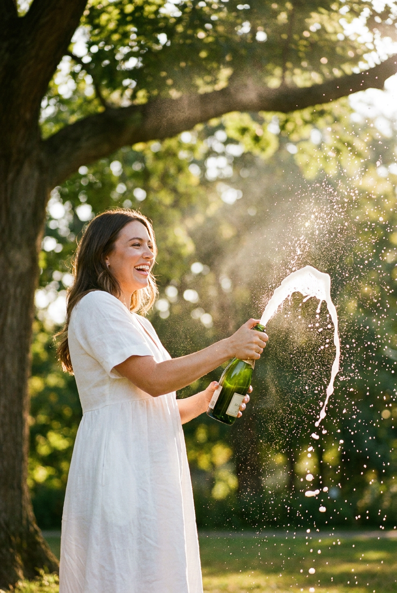
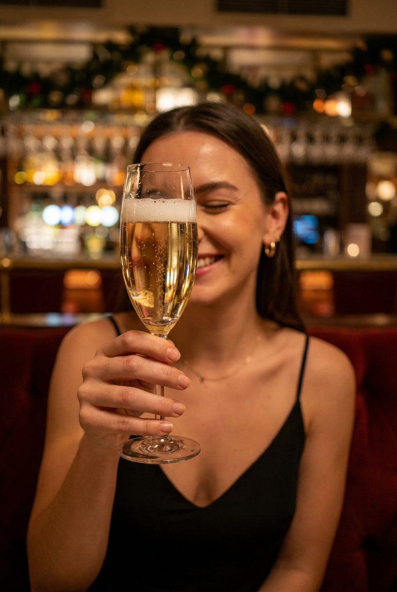
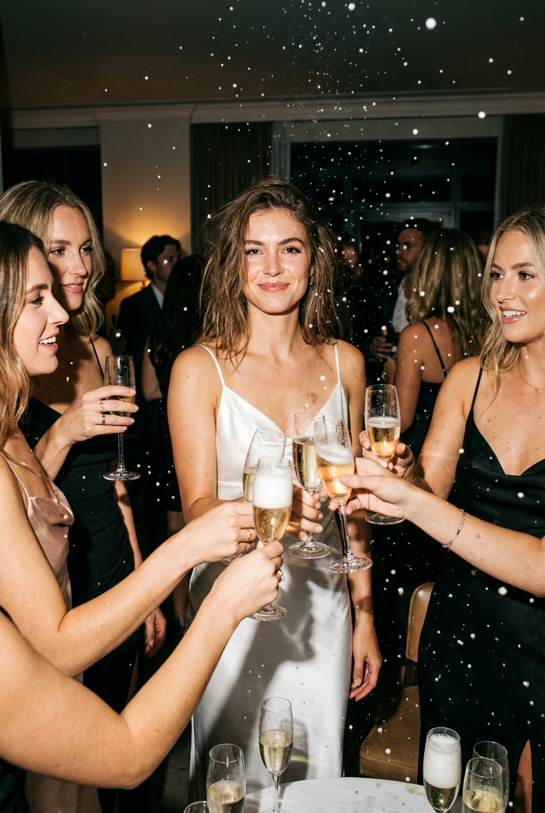
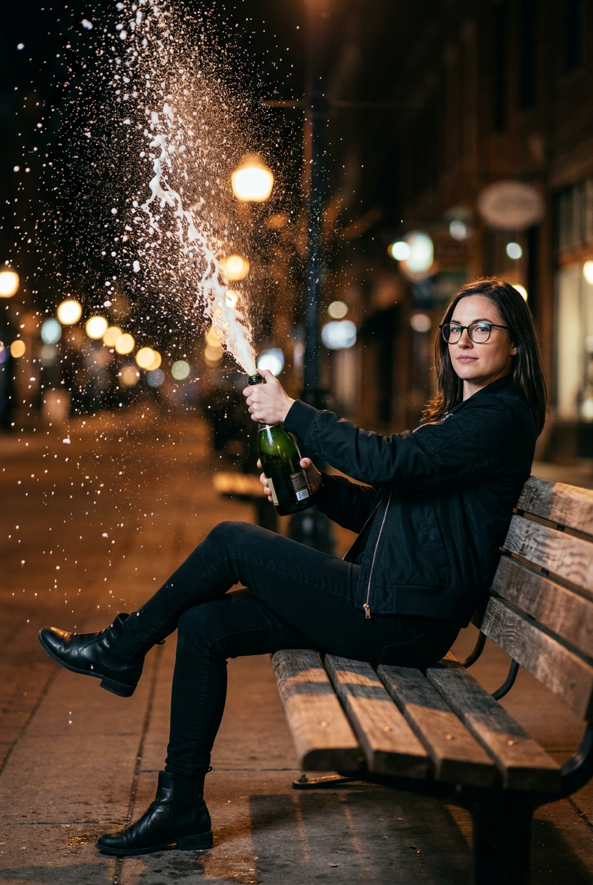
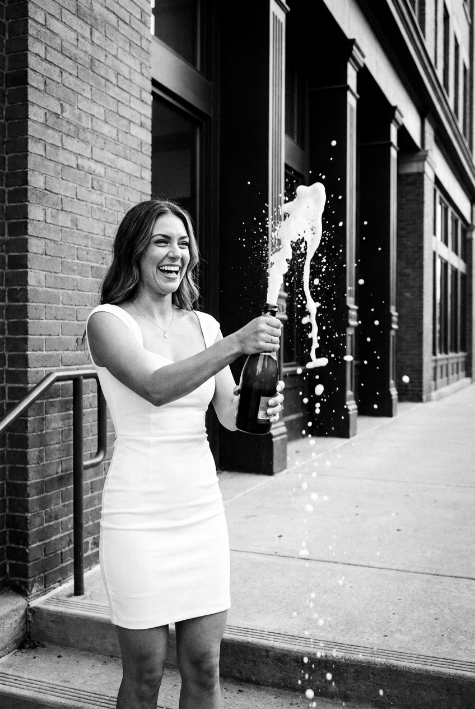
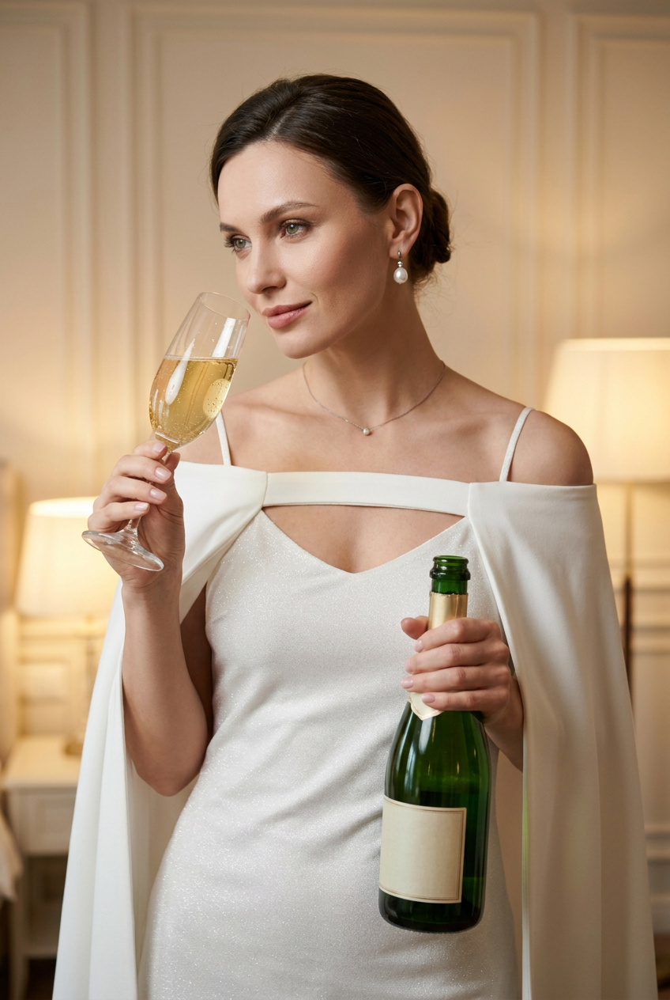
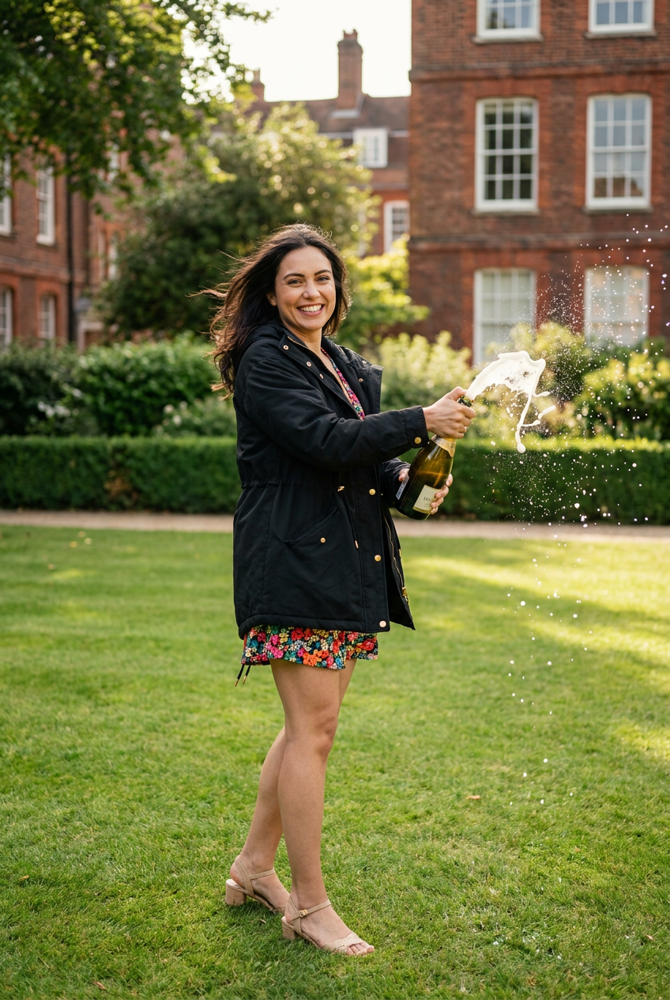
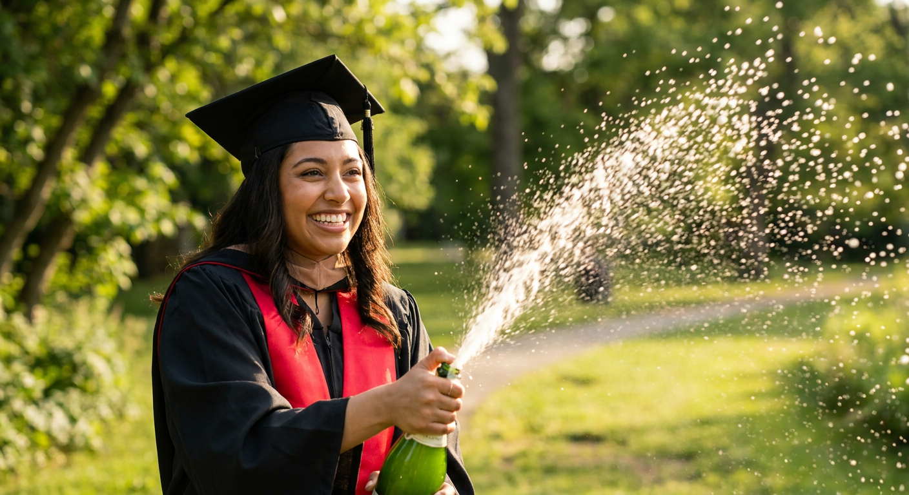
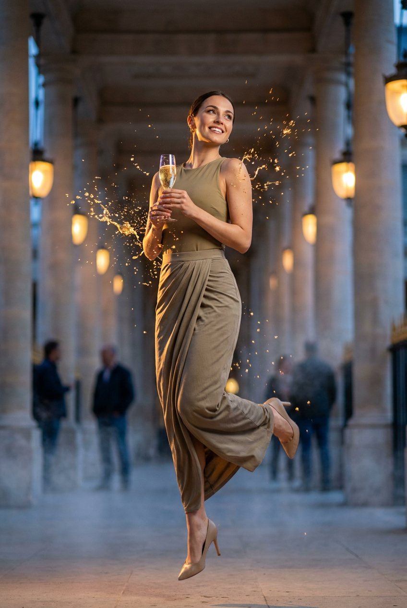
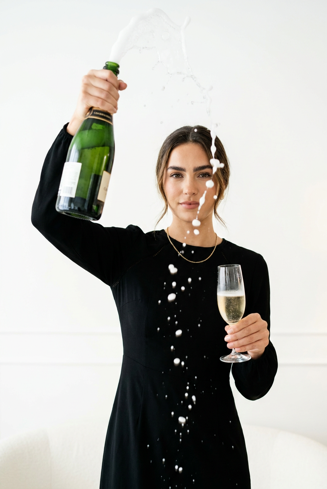

ИИ-фото с шампанским: 10 промптов для нейросети

Обычная фотография с шампанским часто выглядит постановочно: брызги получаются мутными, бутылка деформируется, а эмоция теряется. Генерация помогает собрать эффектный кадр без фотостудии, реквизита и десятков неудачных дублей.
В подборке — 10 готовых сценариев: летний фонтан брызг, ресторанный портрет, шумная вечеринка, ночная улица, выпускной, fashion-съёмка и лаконичный интерьер. Подставьте свой референс лица и при необходимости замените одежду или локацию.
Как сгенерировать такое фото: пошагово
Нужен снимок анфас при ровном свете, лицо в кадре целиком, без тёмных очков и головных уборов. Разрешение от 1000 пикселей по короткой стороне. Чем чётче исходник, тем точнее модель повторит черты.
Выберите сценарий ниже и нажмите «Копировать» — текст уйдёт в буфер целиком, вместе с командой сохранения внешности. Эта команда стоит первой строкой и отвечает за то, чтобы на выходе было ваше лицо, а не случайное.
Кнопка «Сгенерировать» рядом с каждым промптом открывает модель в новой вкладке. Nano Banana Pro работает с референсом лица — в отличие от моделей, которые генерируют портрет с нуля и узнаваемость теряют.
Промпт — в поле ввода, портрет — через загрузку референса. Порядок значения не имеет, но без референса команда сохранения внешности работать не будет: модели нечего сохранять.
Для сторис и ленты берите 9:16, для превью и обложек — 4:3. Первый результат редко идеален: если поза или свет ушли не туда, поправьте соответствующую часть промпта и запустите заново. Обычно хватает двух-трёх итераций.
10 промптов для генерации
1. Праздник в солнечном парке
Строго сохранить внешность по загруженному референсу: черты лица, пропорции, мимику и текстуру кожи без изменений. Фотореалистичный вертикальный lifestyle-кадр 4:5, снятый на открытом воздухе при ярком дневном солнце, объектив 50 мм, малая глубина резкости. В центре — девушка с лицом по загруженному референсу: точно передать форму глаз, бровей, носа, губ, овал, мимику и пропорции без изменения внешности. На ней лёгкое белое платье с короткими рукавами или открытыми плечами, воздушная ткань и летящая юбка, естественный макияж, сияющая улыбка. Она разворачивается к всплеску и смеётся, в правой руке держит бутылку игристого с зелёным стеклом и нейтральной этикеткой без текста. Из горлышка вырывается широкая дуга пены, капли разлетаются над фонтаном и застывают в свете с эффектом sparkle. Фон — солнечный парк, зелень и мягкое боке; реалистичная кожа, резкость на лице и брызгах, естественное движение ткани.
2. Ресторанный тост крупным планом

Строго сохранить внешность по загруженному референсу: черты лица, пропорции, мимику и текстуру кожи без изменений. Вертикальная фотореалистичная lifestyle-фотография для night-out, формат 4:5, объектив 85 мм, тёплый ресторанный свет и мягкое размытие фона. Девушка с лицом по референсу сидит на уютном красном или бордовом диване. Сохранить её индивидуальные черты, естественную текстуру кожи и реальные пропорции лица. На ней чёрное облегающее платье на тонких бретелях в стиле премиального минимализма, небольшие серьги и тонкая цепочка. Волосы уложены для вечернего выхода. Она держит высокий прозрачный бокал-флюте с золотистым шампанским: пузырьки хорошо видны в напитке, стекло даёт аккуратные блики. Эмоция праздничная и искренняя — глаза закрыты или полуприкрыты, губы с яркой красной помадой, лёгкая улыбка наслаждения. Кадр спокойный, дорогой, без читаемых логотипов и случайных надписей.
3. Тост среди подруг

Строго сохранить внешность по загруженному референсу: черты лица, пропорции, мимику и текстуру кожи без изменений. Фотореалистичная party-фотография в помещении, вертикальный кадр 4:5, объектив 35 мм, плотная композиция и живое клубное освещение. В центре ближе к камере стоит девушка с лицом по загруженному референсу; сохранить форму глаз, бровей, носа, губ, овал лица, мимику и пропорции. На ней белое сатиновое платье на тонких бретелях с мягкими складками, лёгкий гламурный макияж и ухоженная кожа. Она спокойно и уверенно смотрит прямо в объектив, волосы слегка растрёпаны движением. Вокруг — четыре или пять подруг в вечерних нарядах: блестящие платья и топы, украшения, у большинства в руках флейты с игристым, бокалы подняты в момент общего тоста. На переднем плане и на столе много бокалов с шампанским. Свет разноцветный, праздничный, фон слегка размыт, лица всех участниц реалистичные, без лишних пальцев и деформированных бокалов.
4. Ночная скамья и фонтан

Строго сохранить внешность по загруженному референсу: черты лица, пропорции, мимику и текстуру кожи без изменений. Вертикальная фотореалистичная street/lifestyle-съёмка ночью, формат 4:5, объектив 50 мм, контрастный свет от уличных фонарей и мягкое боке. На деревянной скамье сидит или полу-лежит женщина с лицом по референсу; сохранить её реальные черты, мимику и пропорции. На ней чёрная лаконичная одежда: тёмный бомбер, куртка или пиджак, чёрные джинсы и ботинки. На лице тёмные очки, выражение спокойное и уверенное, взгляд направлен в камеру. Поза расслабленная: одна нога согнута и вынесена вперёд, вторая устойчиво стоит на земле. В руках у неё бутылка игристого из тёмно-зелёного стекла. В момент открытия из горлышка вверх-влево бьёт высокая струя белой пены, похожая на водопад; вокруг множество мелких капель и частиц. Резко проработать брызги, дерево и ткань, сохранить ночную атмосферу и натуральную перспективу.
5. Чёрно-белый всплеск

Строго сохранить внешность по загруженному референсу: черты лица, пропорции, мимику и текстуру кожи без изменений. Фотореалистичный чёрно-белый street/lifestyle-портрет с высоким контрастом, вертикальный формат 4:5, объектив 50 мм, жёсткий направленный свет и глубокие тени. На переднем плане стоит женщина с лицом по загруженному референсу; точно сохранить форму глаз, бровей, носа, губ, овал, мимику и пропорции. На ней белое элегантное платье короткой длины, приталенного силуэта, с коротким рукавом или тонкими бретелями, гладкая ткань и небольшое украшение на шее — медальон или цепочка. Её глаза светятся от радости. Женщина поднимает вверх бутылку шампанского из зелёного стекла, и из горлышка вылетает густой фонтан пены. Струя образует вертикальное облако, а капли зависают в воздухе, словно снежинки, с резкими контурами на переднем плане и лёгким размытием вдали. Никаких надписей и брендов, выразительная фактура ткани и реалистичная кожа.
6. Элегантный двойной акцент

Строго сохранить внешность по загруженному референсу: черты лица, пропорции, мимику и текстуру кожи без изменений. Изящная фотореалистичная fashion/luxury-съёмка в помещении, вертикальный кадр 4:5, объектив 85 мм, мягкий студийный свет, высокая детализация ткани и украшений. Девушка с лицом по загруженному референсу стоит в центре; сохранить индивидуальные черты, реальную мимику, форму лица и пропорции. На ней короткое белое платье-комбинация или slip-dress на тонких бретелях, с деликатным блеском и микромерцанием материала, поверх — белая мягкая накидка или пальто-пелерина с открытыми плечами и объёмными рукавами. Макияж утончённый, кожа натуральная. На ушах заметны серьги-капли или жемчуг, на шее тонкое ожерелье. В левой руке она держит прозрачный флейт с золотисто-жёлтым шампанским, в правой — бутылку из зелёного стекла со светлой этикеткой без читаемого текста. Из бутылки вырывается пена и россыпь брызг, момент заморожен короткой выдержкой. Роскошная, но не перегруженная композиция.
7. Летний всплеск на лужайке

Строго сохранить внешность по загруженному референсу: черты лица, пропорции, мимику и текстуру кожи без изменений. Фотореалистичная вертикальная lifestyle-фотография 4:5 на аккуратной зелёной лужайке, объектив 35 мм, солнечный рассеянный свет и полная фигура в кадре. В центре стоит девушка с лицом по загруженному референсу; сохранить её индивидуальные черты, форму глаз, бровей, носа, губ, овал лица, мимику и пропорции. Она улыбается, слегка поворачивает лицо к камере, волосы растрёпаны ветром. На ней чёрная объёмная куртка или плащ-парка с возможными золотистыми деталями на воротнике и манжетах, под ней короткое платье с ярким цветочным или мелким орнаментом. На ногах аккуратные летние туфли или босоножки на небольшом каблуке, ноги полностью видны. В руках бутылка игристого, из горлышка в момент открытия вылетает облако белой пены и светлых капель. Заморозить движение брызг, добавить естественные солнечные блики, не менять анатомию рук и пальцев.
8. Выпускной с диагональю брызг

Строго сохранить внешность по загруженному референсу: черты лица, пропорции, мимику и текстуру кожи без изменений. Фотореалистичная уличная lifestyle-съёмка, крупный средний план, вертикальный формат 4:5, объектив 50 мм, дневной свет и резкая детализация капель. Девушка с лицом по референсу одета как выпускница: чёрная академическая мантия с капюшоном, квадратная выпускная шапочка mortarboard с кисточкой и ярко-красная лента на шее. Сохранить её настоящие черты лица, пропорции, мимику и естественную текстуру кожи. Она уверенно разворачивается к бутылке, глаза сияют от радости, взгляд направлен на фонтан. В руках девушка держит бутылку шампанского из зелёного стекла. При открытии мощная струя пены и брызг уходит вверх-влево, растягиваясь по диагонали кадра; в воздухе видны многочисленные искрящиеся капли и частицы. Настроение — завершение учёбы и громкий праздник. Чистый фон без случайных надписей, реалистичная ткань мантии, правильная форма шапочки и рук.
9. Золотой всплеск у колонн

Строго сохранить внешность по загруженному референсу: черты лица, пропорции, мимику и текстуру кожи без изменений. Фотореалистичная fashion/party-фотография ночью, вертикальный кадр 4:5, объектив 85 мм, тёплый золотой свет фонарей, малая глубина резкости и мягкое боке. На переднем плане девушка с лицом по загруженному референсу; сохранить индивидуальные черты, овал, пропорции и естественную эмоцию. На ней бежевый или оливковый топ и облегающий комплект: юбка ниже середины икры с длинной драпировкой ткани либо юбка-слиток. Поза элегантная, корпус слегка повёрнут, взгляд направлен вверх и в сторону, на лице улыбка. В одной руке она держит бокал с игристым вином; из него в воздух вылетает струя золотистых брызг, капли и искры подсвечены тёплыми лучами и застыли в моменте. Фон — классическое здание или колоннада с высокими колоннами, вдали несколько размытых фигур гостей вечеринки. Сохранить вечернюю атмосферу, натуральную кожу и чистые очертания стекла.
10. Чёрное платье и два бокала

Строго сохранить внешность по загруженному референсу: черты лица, пропорции, мимику и текстуру кожи без изменений. Фотореалистичная вертикальная lifestyle/party-съёмка в минималистичном интерьере, формат 4:5, объектив 50 мм, мягкий тёплый свет от окна или лампы. Фон почти однотонный: светлые стены, дверные и панельные линии без лишнего декора. В центре стоит женщина с лицом по загруженному референсу; сохранить форму глаз, бровей, носа, губ, овал лица, реалистичную кожу и естественные пропорции. На ней чёрное элегантное платье с длинным рукавом и премиальной фактурой, на шее тонкая цепочка без логотипов. Макияж яркий, брови выразительные, взгляд уверенный. Поза динамичная: одна рука высоко поднята и держит бутылку шампанского из зелёного стекла, вторая — прозрачный бокал-флюте с игристым. В бутылке и бокале видны золотистый напиток, блики и пузырьки; добавить ощущение движения, но не искажать пальцы. Чистая композиция, без читаемых надписей и брендов.
Что важно учесть в этом стиле
Укажите вертикальный формат 4:5 или 9:16, фокусное расстояние 50–85 мм и короткую выдержку, если в кадре есть фонтан. Так нейросети проще понять композицию: лицо остаётся главным объектом, а брызги выглядят резкими, а не превращаются в туман.
Описывайте траекторию напитка отдельно: вверх, по диагонали, дугой или влево от горлышка. Для стекла добавляйте пузырьки, блики и прозрачность, а для одежды — материал, посадку и длину. Этикетку лучше сразу сделать нейтральной, без логотипов и текста.
Идеи для вариаций
- Замените парк на крышу с видом на город, пляж или заснеженную террасу.
- Сделайте серию в одной локации: общий план, портрет 85 мм и крупный кадр с бокалом.
- Поменяйте шампанское на безалкогольное игристое, лимонад или золотистый напиток без привязки к бренду.
- Добавьте цветные источники света: розовый неон, холодную вспышку или зелёные блики от бутылки.
- Попробуйте плёночную фактуру, редакционный fashion-стиль или чёрно-белую обработку.
Как собрать свой промпт
Сначала задайте формат, тип съёмки и героя: кто в кадре, где он находится и какое у него выражение лица. Затем опишите одежду, позу, главный предмет и точное действие — например, бутылка поднята вверх, а струя уходит по диагонали влево.
В конце добавьте свет, объектив, глубину резкости и ограничения: реалистичные руки, правильное количество пальцев, прозрачное стекло, отсутствие логотипов и надписей. Для сложной сцены закладывайте 3–5 генераций, меняя только один параметр за попытку.
Ошибки, из-за которых кадр не получается
- Слишком много действий. Если герой одновременно открывает бутылку, пьёт и поднимает бокал, модель путает руки и предметы.
- Нет направления брызг. Укажите, откуда начинается струя и куда она движется относительно лица.
- Размытые детали. Добавьте короткую выдержку, frozen motion и резкие капли, особенно для фонтана.
- Искажённое лицо. Не перегружайте описание внешности несовместимыми стилями и используйте один качественный референс.
- Нечитаемая композиция. Ограничьте сцену двумя главными акцентами: человеком и бутылкой или бокалом.
Частые вопросы
Как сделать такое ИИ-фото бесплатно?
Попробуйте Kandinsky и Шедеврум — они подходят для текстовой генерации, но точность лица и сложных рук может быть нестабильной. В Krea AI и Arena.ai иногда доступны бесплатные попытки, однако лимиты, очередь и функции работы с референсом меняются. Для сходства загружайте чёткий портрет, проверяйте правила сервиса и будьте готовы сделать несколько вариантов.
Как сохранить сходство с человеком на референсе?
Используйте хорошо освещённый портрет без очков, сильных фильтров и перекрывающих лицо волос. В промпте отдельно попросите сохранить форму глаз, носа, губ, овал и естественную мимику. Если сервис поддерживает силу референса, начните со среднего значения: слишком высокое может испортить позу и одежду.
Почему нейросеть искажает руки и бокалы?
Руки и прозрачное стекло относятся к самым сложным деталям. Описывайте каждую руку отдельно, не добавляйте лишних жестов и проверяйте, сколько предметов должно быть в кадре. Сгенерируйте сначала портрет с правильной позой, а затем исправьте кисти или бокал отдельной дорисовкой.
Как получить реалистичные брызги шампанского?
Задайте короткую выдержку, замороженное движение, отдельные капли разного размера и чёткую траекторию струи. Уточните, что пена выходит именно из горлышка, а не появляется рядом с бутылкой. Для естественного результата добавьте контровой свет: он подчеркнёт прозрачность капель и пузырьков.